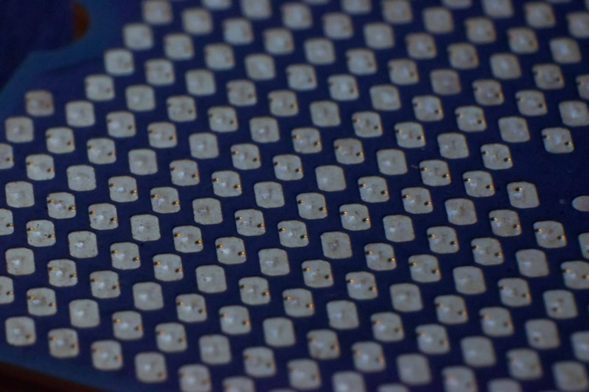

트럼프, 애플에 '中 메모리 퇴출' 압박…韓 DRAM 소재 수혜 구간은

트럼프 행정부는 애플에 중국산 메모리 반도체(YMTC NAND 등) 사용 중단을 공식 요구한 것으로 알려졌다. YMTC는 232단 3D NAND를 양산 중이며, 2023년 기준 애플 아이폰 일부 모델에 공급 가능 수준까지 기술 격차를 좁혔다. 애플이 중국산 메모리를 전량 대체할 경우 삼성전자·SK하이닉스·마이크론의 NAND 공급 요구량이 연간 약 15~20% 증가할 것으로 시장은 전망한다.
이번 조치는 엔비디아·AMD AI 반도체 수출 허가 의무화 추진과 맞물려 '반도체 공급망 전면 비중국화'라는 방향성의 일환이다. 미국 상무부는 2025년 들어 HBM 대중 수출 추가 제한, NAND 설계기술 이전 규제 등 반도체 관련 수출통제를 순차적으로 강화하고 있다. 중국 내 삼성전자(시안 NAND 팹)·SK하이닉스(우시 DRAM 팹)의 설비 증설은 이미 미국 허가 요건에 묶여 있다.
한국 메모리 기업의 대미 공급 확대는 소재 조달 구조에도 직접 영향을 미친다. HBM과 LPDDR5 생산에 필수적인 고순도 이소프로판올(IPA), 불화수소(HF), CMP 슬러리 등 핵심 공정 소재 수요가 동반 상승한다. 국내 솔브레인·ENF테크놀로지·동진쎄미켐 등 소재 기업의 수주 확대 가능성이 실질적으로 높아지는 구간이다.
다만 중국 내 한국 팹의 운영 리스크도 동시에 가중된다. 삼성전자 시안 팹은 연간 NAND 생산량의 약 40%를 담당하며, SK하이닉스 우시 팹은 DRAM 생산의 약 38%를 차지한다. 미국 압박으로 중국 팹 생산 비중을 줄일 경우, 국내 및 미국 신규 팹 투자 속도와 소재 공급 계약 확대 타이밍을 동시에 조율해야 한다.
트럼프 행정부의 '애플 중국산 메모리 퇴출' 요구는 단순한 무역 압박을 넘어서, 소비자 전자제품 공급망까지 비중국화를 강제하겠다는 선언이다. 이는 AI·군사용 반도체에서 시작된 수출통제가 이제 일반 스마트폰 부품 수준까지 내려왔다는 의미다. 공급망 분리의 속도가 당초 예상보다 2~3년 빠르게 진행되고 있다.
한국 메모리 기업 입장에서는 단기 수혜처럼 보이지만 중장기 구조는 복잡하다. 중국 팹 비중 축소를 강요받으면서 동시에 미국 신규 팹(삼성 텍사스 테일러, SK하이닉스 인디애나 패키징 허브) 투자를 가속해야 한다. 이 과정에서 한국산 소재의 미국 공장 납품 인증 비용과 리드타임이 추가 변수로 작용한다.
소재 공급자 시각에서 보면, 지금 이 타이밍에 미국 신규 팹의 소재 벤더 인증에 먼저 들어간 기업이 5년 후 미국 현지 공급망의 핵심 자리를 차지한다. 삼성·SK하이닉스의 미국 팹 가동 전에 소재 퀄리피케이션을 완료하는 것이 선점 전략의 핵심이다.
국내 반도체 소재 기업(공정 화학품): 솔브레인(HF, 슬러리), ENF테크놀로지(IPA·세정제), 동진쎄미켐(포토레지스트) 등이 삼성·SK하이닉스 국내 및 미국 팹 증설에 따른 소재 수요 증가 직접 수혜권에 들어간다. 특히 HBM 전용 공정 소재는 DRAM 일반 공정 대비 소재 투입 단가가 30~40% 높다.
한국 NAND·DRAM 메모리 기업: 삼성전자·SK하이닉스는 YMTC 공백이 현실화될 경우 애플향 NAND 공급을 추가로 흡수할 수 있는 유일한 비중국 대규모 공급자다. 마이크론의 NAND 캐파 단독으로는 애플 물량 전량을 대체하기 어렵기 때문에, 한국 기업의 협상력이 단기적으로 상승한다.
중국 내 한국 팹 투자자: 삼성전자 시안 팹(NAND 40%)·SK하이닉스 우시 팹(DRAM 38%)은 미국의 설비 증설 허가 제한과 비중국화 압박이 동시에 작동하면서 장기적 가동률 유지가 불투명해졌다. 중국 팹 자산 가치 하락 리스크가 재무 보고서에 반영되기 시작할 시점이다.
YMTC 및 중국 메모리 생태계: YMTC는 애플이라는 플래그십 고객 확보에 실패할 경우 232단 3D NAND 기술의 상업적 검증 기회를 잃는다. 이는 중국 메모리 기술 자립 일정을 최소 2~3년 지연시키는 효과를 낸다.
투자자라면 삼성전자·SK하이닉스의 미국 신규 팹 투자 진행 속도(텍사스 테일러·인디애나 팹 착공·가동 일정)를 추적하면서, 동시에 국내 공정 소재 기업의 미국 팹 벤더 인증 여부를 확인하라. 소재 기업의 미국 팹 납품 인증 완료 발표가 주가 선행 지표가 된다.
구매담당자라면 미국 팹 가동 전 소재 퀄리피케이션 프로세스에 최소 18~24개월이 소요된다는 점을 감안해, 지금 당장 삼성·SK하이닉스 미국 팹 소재 공급망 인증 절차를 개시해야 한다. 늦게 시작할수록 초기 납품 기회를 경쟁사에 빼앗긴다.
중국 팹 의존도가 높은 소재 기업은 지금 당장 미국·한국 팹 비중 확대 시나리오를 기준으로 고객 포트폴리오 리밸런싱 계획을 수립해야 한다. 중국 팹 물량이 3년 내 20~30% 감소할 경우를 기준 시나리오로 놓아야 한다.
실제 조달 현장에서는 — 삼성전자 텍사스 테일러 팹에 납품하려는 국내 소재 기업들이 2024년 하반기부터 미국 현지 법인 설립 또는 미국 파트너사와 조인트벤처 구성을 서두르고 있다. 미국 팹은 '한국에서 만들어 수출'하는 구조를 장기적으로 허용하지 않을 가능성이 높다. 현지 생산 또는 현지 파트너십 없이는 벤더 등록 자체가 거부되는 사례가 이미 나오고 있다.
이 포스팅은 쿠팡 파트너스 활동의 일환으로 수수료를 제공받습니다.